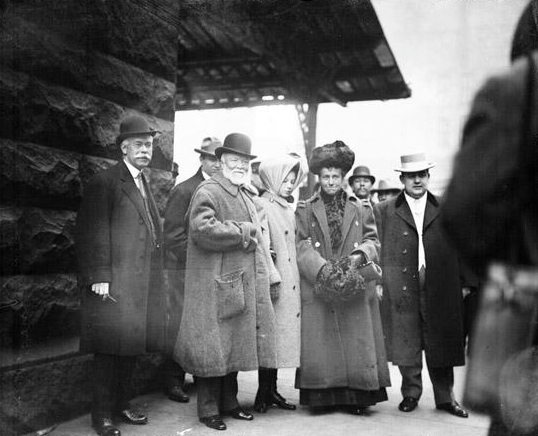

Y
¿Quien es el hombre detrás del acero?
Historia de su juventud
El nacimiento de un Visionario
No todos nacen en una cuna de oro: En su nacimiento en 1835 en Dunfermline, Escocia, Andrew Carnegie estaba destinado a enfrentar desafíos que moldearían su futuro. A los 13 años, emigró junto a su familia a Estados Unidos, estableciéndose en Pittsburgh. El viaje fue difícil, pero en medio de las dificultades, Carnegie demostró una voluntad inquebrantable de aprender y prosperar. Trabajó arduamente en diversos empleos, mientras aprovechaba cada oportunidad para educarse en la biblioteca pública. La escasez de recursos no fue un obstáculo para su deseo de conocimiento. La pasión, la determinación y el apoyo de mentores clave lo llevaron a ascender rápidamente en el mundo empresarial. Su infancia y juventud enriquecieron su visión empresarial y alimentaron su compromiso con el bienestar social. Desde sus modestos inicios hasta su posición como uno de los empresarios más exitosos de su tiempo, el camino de Andrew Carnegie refleja una historia de superación y perseverancia.
Obsesión por un cambio
Acenso a la riquezasiendo operario de algodón
Una juventud anciosa: anhelos de cambios!
Adéntrate en el fascinante viaje de un joven visionario que transformó la industria del acero y dejó un legado imborrable. Con determinación y genialidad, Andrew Carnegie pasó de trabajar en una fábrica de algodón a convertirse en un titán del acero. Su enfoque audaz e innovador revolucionó el mundo empresarial, desafiando los límites convencionales y estableciendo nuevas formas de producir. Pero su historia no se trata solo de negocios, sino de perseguir sueños y superar obstáculos. Carnegie nos enseña que con pasión, determinación y un poco de audacia, podemos alcanzar alturas inimaginables. Prepárate para sumergirte en la inspiradora historia de un hombre que hizo temblar los cimientos de la industria y descubre cómo sus logros trascienden el tiempo.
Compromiso con la humanidad
Legadoen la humanidad
Bibliotecas para todos: El legado filantrópico de Andrew Carnegie!
Descubre cómo un hombre visionario cambió vidas a través de su compromiso con la educación y la creación de bibliotecas públicas. Andrew Carnegie, después de su éxito en los negocios, se dedicó a devolver a la sociedad de una manera grandiosa. Prepárate para sumergirte en la historia inspiradora de un hombre que creía en el poder transformador de la información y el aprendizaje. Las bibliotecas de Carnegie son un testimonio vivo de su filantropía y continúan beneficiando a generaciones enteras hasta el día de hoy.
Thomas Scott
Soy el mentor de Andrew Carnegie
Personas Relacionadas
-
J P morgan
Un poderoso financiero e industrial con una influencia significativa en los mercados financieros y la economía de su tiempo. -

Margaret Carnegie Miller
Una destacada filántropa y defensora de la educación que llevó adelante el legado de su padre, Andrew Carnegie. Su dedicación a la promoción de bibliotecas y programas educativos dejó una huella duradera en la sociedad, mejorando el acceso a la educación para muchas personas. -
 Jhon D Rockefeller
Jhon D Rockefeller
Un magnate del petróleo y filántropo que revolucionó la industria y dejó un legado duradero. -
 Cornelius Vanderbilt
Cornelius Vanderbilt
Un astuto empresario y magnate del transporte que desempeñó un papel fundamental en el desarrollo de la industria ferroviaria y la navegación a vapor en Estados Unidos.
Tags
Historia Ascenso meteórico E.E.U.U siglo XIX Industria del acero Visionario Obsesión de Riqueza Responsabilidad social De Pobre a Rico Éxito empresarial Prosperidad Bibliotecas públicas El Evangelio de la Riqueza Empresario Filántropo
Inspiration
Follow Me
Subscribe
Enter your e-mail below and get notified on the latest blog posts.
Libros relacionados
-
 Autobiography of Andrew Carnegie
Autobiography of Andrew Carnegie
Es un relato inspirador sobre la vida del magnate del acero. Desde sus modestos inicios hasta su ascenso como uno de los hombres más ricos de Estados Unidos, Carnegie comparte su visión empresarial y su dedicación a la filantropía. Esta obra es una lectura enriquecedora que destaca la importancia del trabajo duro y la generosidad en la búsqueda del éxito. -
 The Gospel of Wealth (1889)
The Gospel of Wealth (1889)
Es un ensayo que expone la visión y filosofía de Andrew Carnegie sobre la riqueza y la responsabilidad social. En este libro, Carnegie defiende que los ricos tienen la obligación de utilizar su fortuna para el beneficio de la sociedad. Sus ideas sobre la filantropía y la distribución equitativa de la riqueza siguen siendo relevantes hasta el día de hoy. -
.jpg) Triumphant Democracy (1886)
Triumphant Democracy (1886)
Carnegie examina el sistema democrático estadounidense y argumenta a favor de la igualdad de oportunidades y la prosperidad para todos los ciudadanos. El libro aborda temas como la educación, el trabajo y la economía, ofreciendo una visión optimista y pragmática sobre la democracia y su capacidad para promover el progreso social. -
 Round the World (1884)
Round the World (1884)
Relata los viajes de Andrew Carnegie alrededor del mundo, ofreciendo una perspectiva fascinante de los lugares que visitó y las culturas que experimentó. El libro es una mezcla de observaciones personales, anécdotas interesantes y reflexiones sobre la diversidad del mundo. Es una obra que permite al lector embarcarse en un viaje a través de los ojos de Carnegie.